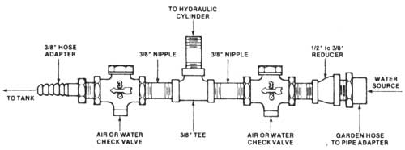

Thar she blows! MOTHER's easily constructed, hand-operated hydrostatic pressure test stand finds the flaw in a defective water heater tank. The container can now be fixed with a spot weld ... or discarded in favor of a better tank. Note that while the modified hydraulic cylinder shown here (see text for details) is a double-acting model, only one of the unit's fittings is used in the test stand's plumbing (an elbow has been screwed into the other port, but it doesn't attach to anything nor is it plugged). In other words, a single-acting hydraulic cylinder is all you need for the guts of this highpressure test stand.